Sweden and Germany 2019
September and October 2019
Travelling as adult is a serious pain in the ass. The day of our departure, not only did we have to bring Verity to school, but we had to finialize our packing and try to get onto a plane by 4:00pm. (Ask me for stockholm border patrol story -- too embarassed to even write it.) I was tired before the trip even started. After being awake for about 24 hours, we started our trip visiting a bunch of touristy spots in Stockholm, including the city hall in the picture below.
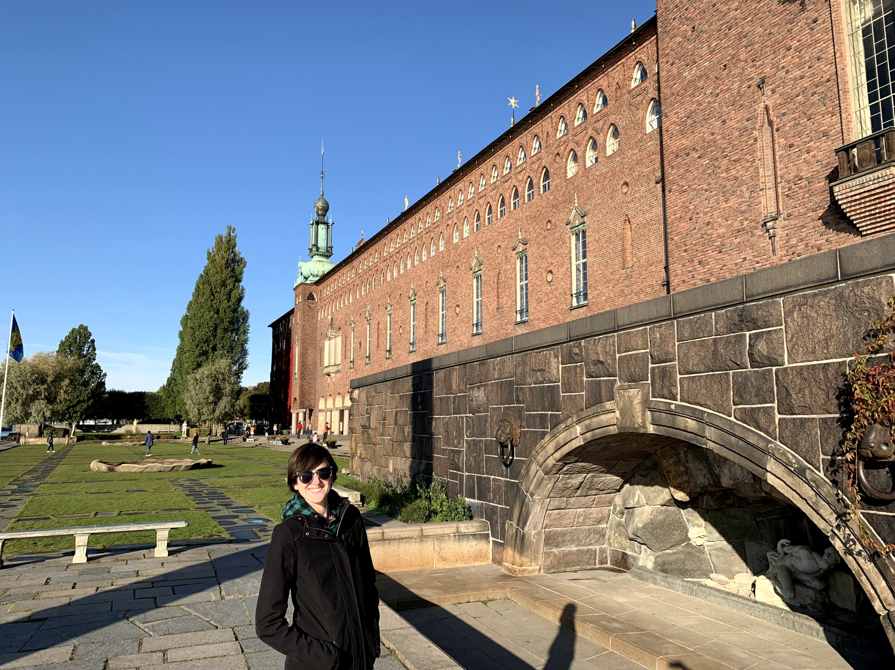
Generally speaking, Stockholm was a beautiful city. However, after the day of meatballs in Stockholm, we've been awake for close to 36 hours; Dana was cold; I was grumpy cause I ate too much dairy on the plane; and our flight to Berlin was not for another 3 hours. So, I decided to rent a day room. For 300 Kronas, we rented a room for 3 hours. Probably shouldn't ever touch the sheets to a day room hotel but we were so tired that didn't matter. Nap time!
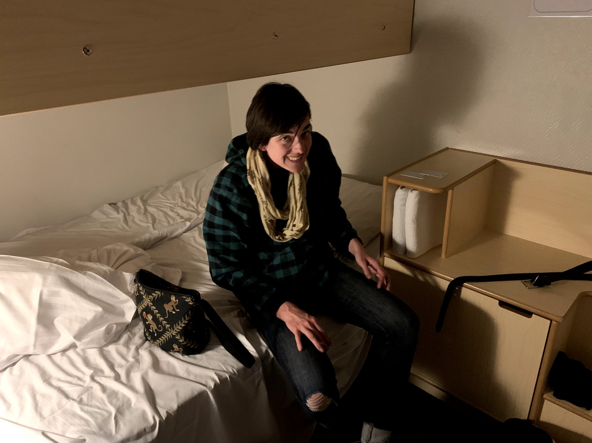
While we were sleeping in the room; disaster struck. We learned that Heather, my sister-in-law and marathon companion, broke her arm in 3 places a few hours after arriving in Berlin in a fall. They put her in an Ambulance and took her to the hospital and the German doctor recommended surgery in Berlin. Dana and I were about to cancel our trip but Heather decided she will just go home to get repaired. An extremely helpful Delta Airlines rep allowed Heather to change her flight from Frankfurt-DC to Berlin-Detroit for a mere $300. Best airline ever? The next morning, Dana and I took her to Berlin Tegel Airport, found some helpful Americans to help her onto the plane and we continued on our journey without Heather.
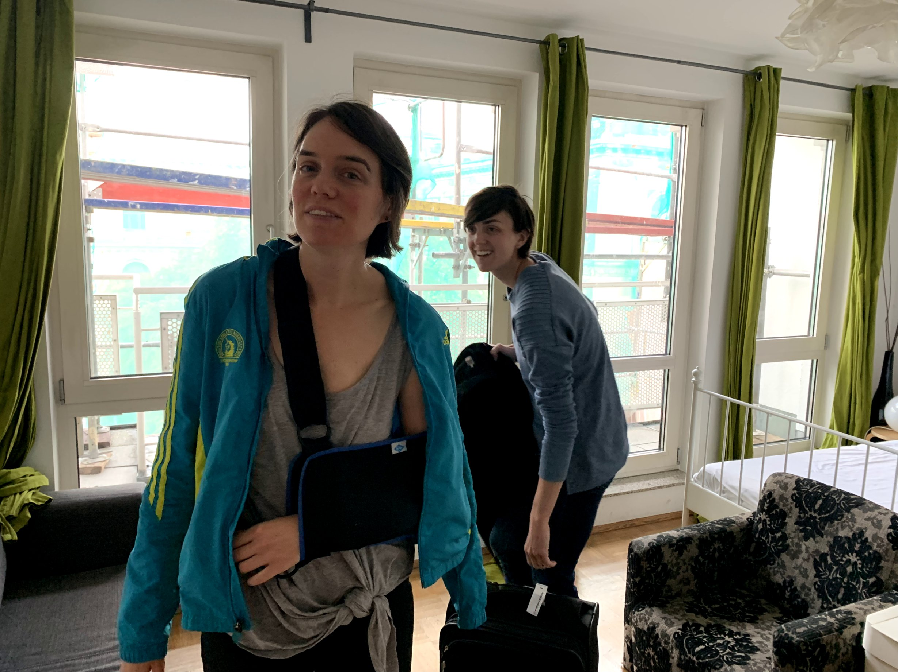
After sending Heather along back to Detriot, we headed over to the package pickup for the Berlin Marathon. Not surprisingly, it was just a mess; I should never do another big marathon (except Chicago). However even with the mess, it's really cool that the package pickup was at Berlin Tempelhof Airport which was the airport used during the airlift.
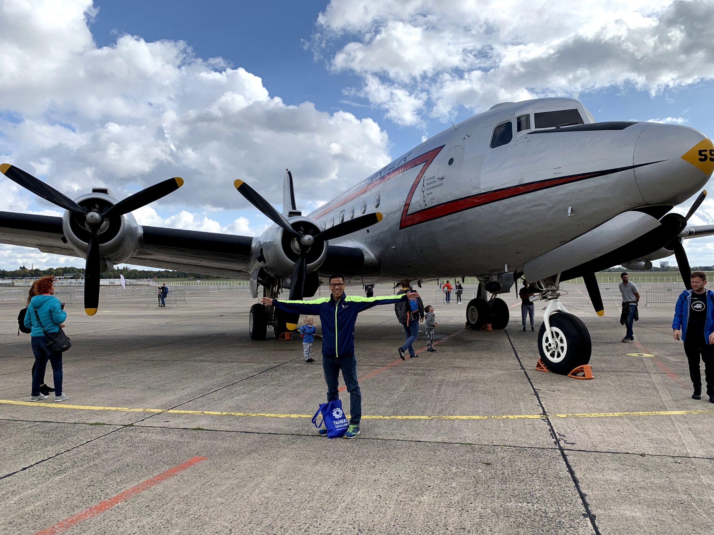
I tried to spend the rest of the day relaxing and not spend too much energy walking around. The best part of my day getting to watch the In-Line-Skating Marathon. It has to be the most entertaining version of 26 miles. We watched every single entrant in the light rain. Many skaters fell but no one broke a bone which made me wonder how hard Heather fell.
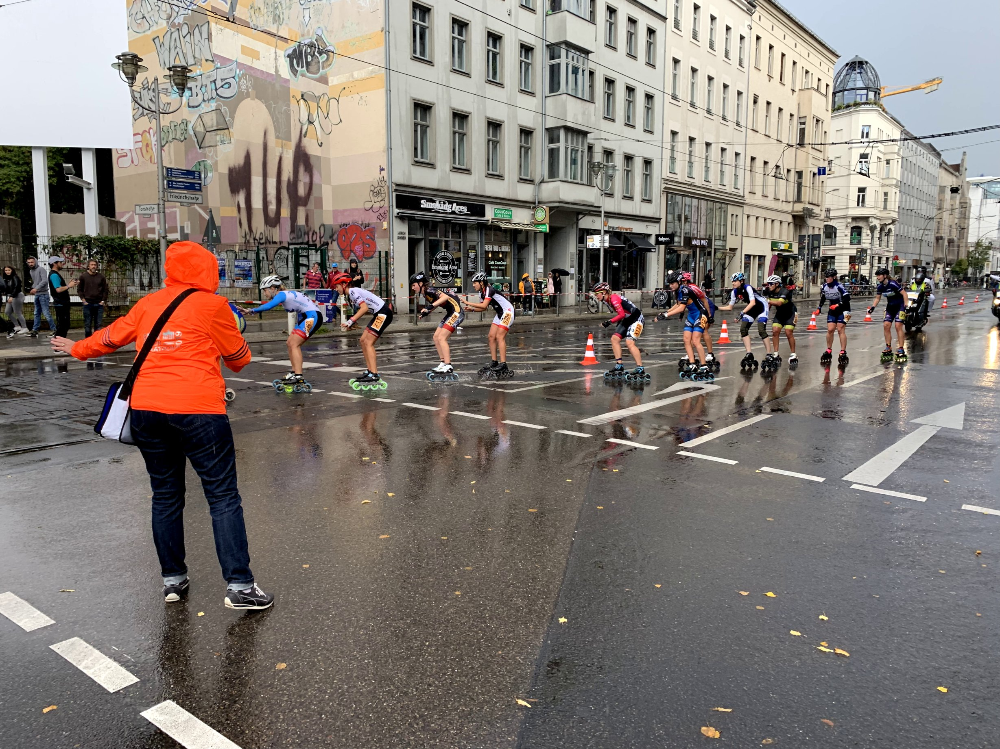
Sunday was Marathon day. I woke up early to walk over to the race. The morning was cold but in my opinion, that's actually ideal for racing. Unfortunately around mile 4, it started raining and didn't stop for the next 22 miles. It's not pleasant to run 26 miles, but it's even less pleasant to run 26 miles in wet shoes. I have to say, the race was not particularly my favorite; the crowd and music was sparse, the course was too narrow at times, and the roads were fairly uneven. The food options were glorious though: I think Berlin might have the best apples, bananas, and tea. Yes, they gave runners warm tea. Overall, I ran a 3:41:17 which was alright. (Photo below: grumpy face cause it was sooo cold before the gun.)
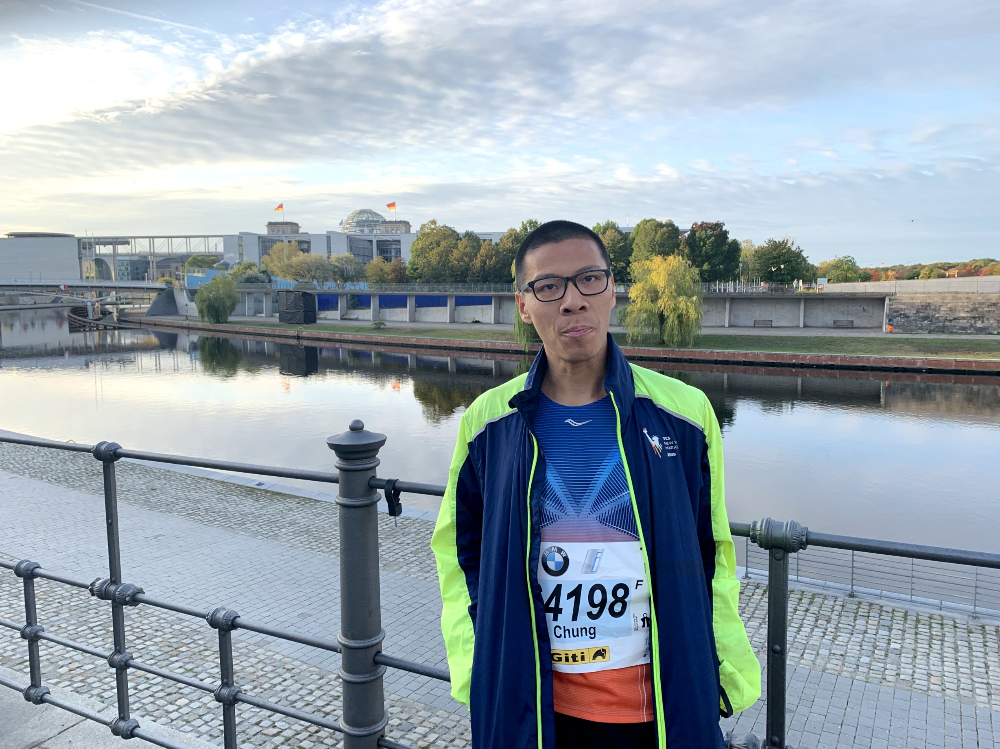
After the marathon, a quick shower, and nap. I wanted to see the sights: Checkpoint Charlie and famous parts of the wall. Dana wanted to see the Lincoln Square of Berlin, that is, a good place to raise kids. She determined that this was the neighborhood of Prenzlauer Berg. So, we took a Tram out there and ate at an Austrian Bakery. It actually is a nice place to raise kids; I can see myself living here.
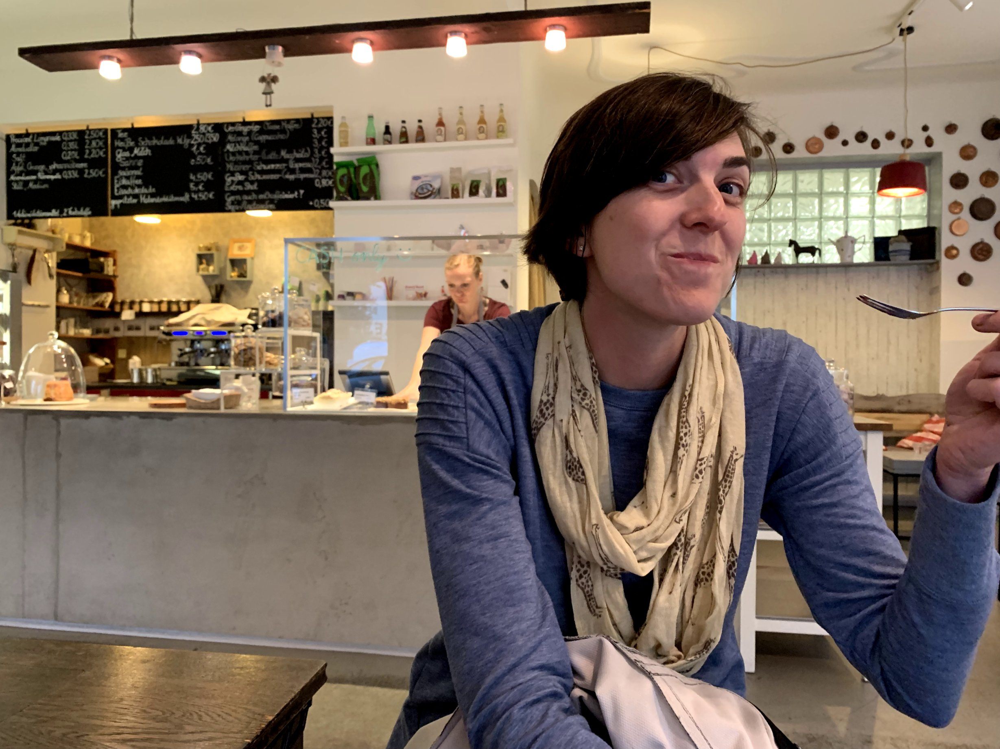
The next morning, it was time to see non-urban Germany. We woke up early and took the ICE to Erfurt. It was a nice little German town notable for their Thuringian sausage (It really is the best German sausage) and wood work. Here Dana is standing behind a Krämerbrücke (wood merchant bridge) from the middle ages. Even today, the merchants in the stores on the bridge live above their shops.
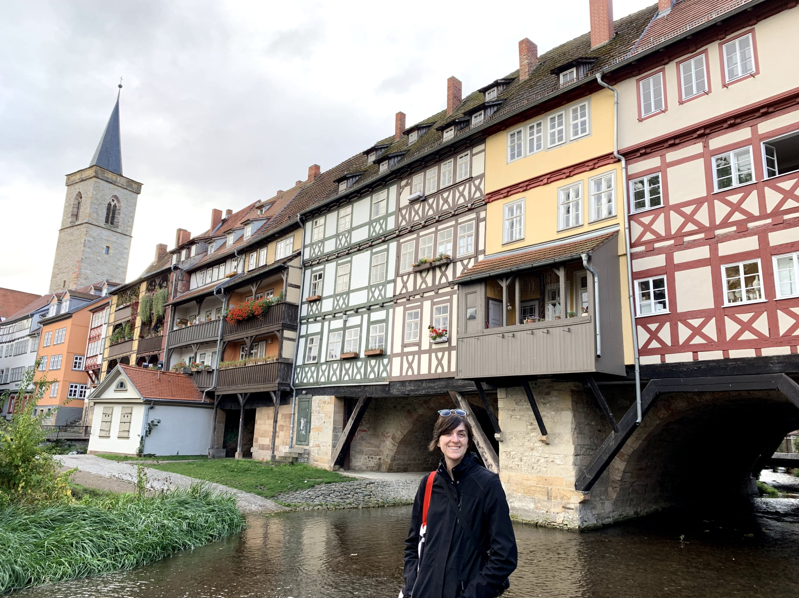
After Erfurt, Dana and I went and picked up our rental car. We were off to the country-side! It seems really insane that (I already knew this from Scotland) anyone can just go and rent a car in any other country. This is especially insane because car-rental is in the country where there are stretches of A-roads which have no speed limit (look for the 4 grey bars). Unsurprisingly, people do end up driving 200 km/h. The amazing thing about Germany is that one can pick a random city to take a driving break and it inevitabily ends up being some idealic Christmas town. That is how we found Alsfeld and an amazing bakery.
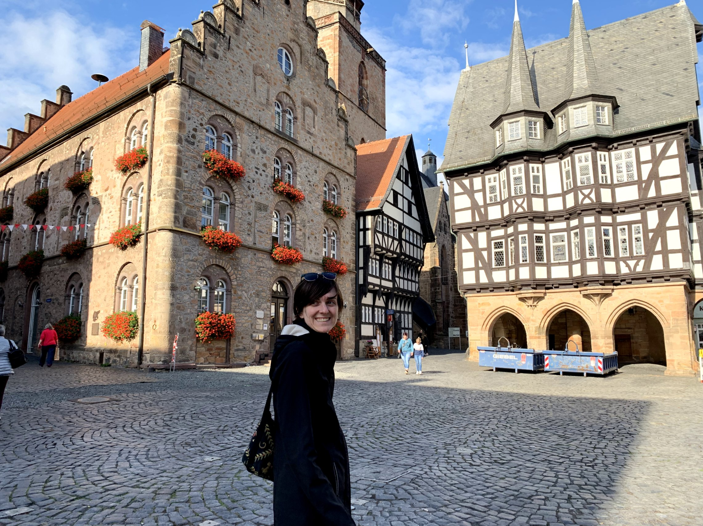
That evening, at sundown, we finally made it to the rural town of Münstermaifeld. The cottage below, an old schoolhouse, is where we slept for the next 10 hours. It was the first night in a long time we had no reason to wake up early the next morning.
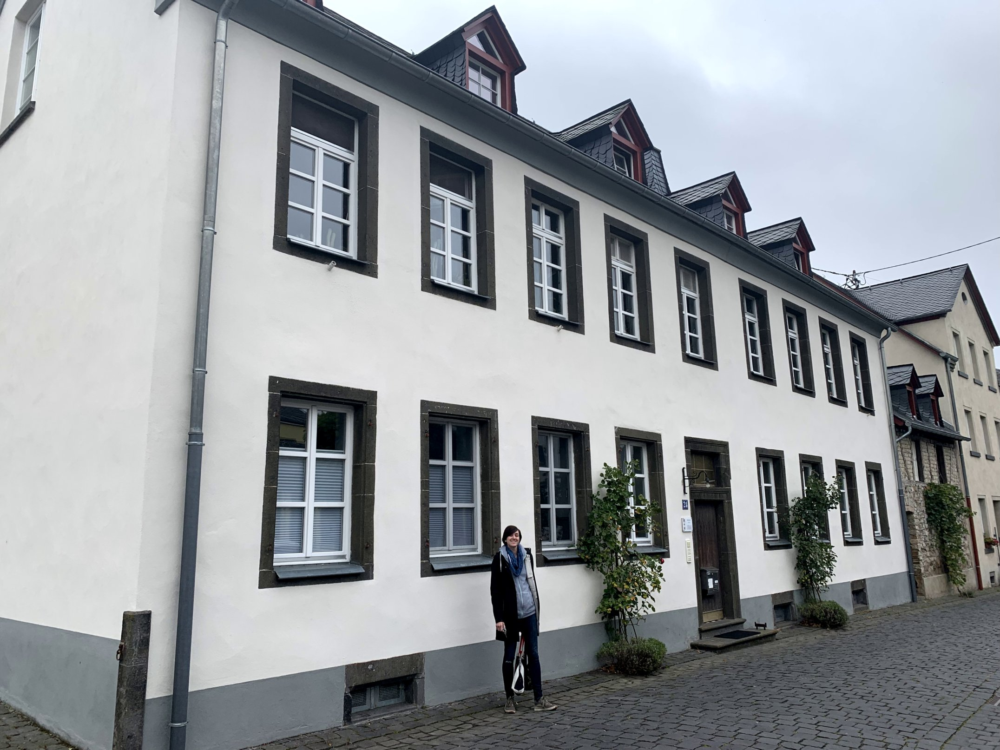
Next to Münstermaifeld was the Eltz Castle. It's no Disney castle (Neuschwanstein Castle) but it's still an operational museum castle. People still live there! and the Eltz family still owns it -- the current owner is the 33rd generation of Eltz to own it. Dana and I went on the tour ... and now I'm pretty much a medeval castle expert.
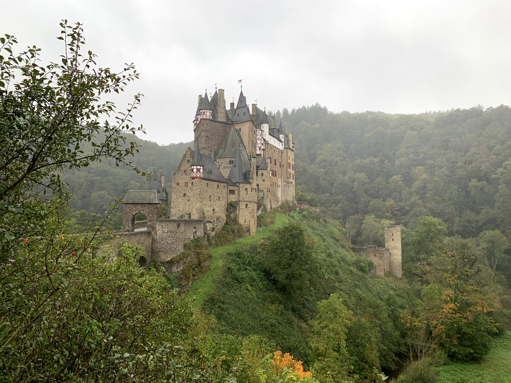
Afterwards, we drove down the Mosel River to the wine country of Germany. (Yes, this town also looks like a Christmas town) We tried a few different wines and drank a coffee at the Castle at the top of the hill.
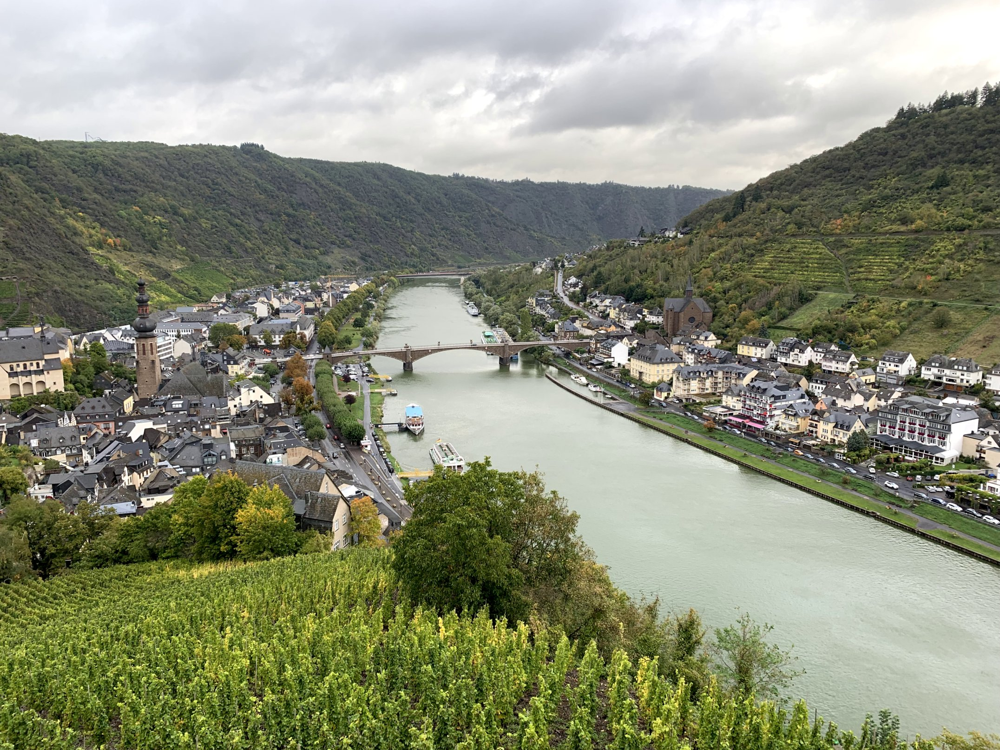
There's even a hike around the castle to enjoy the views of the Mosel.
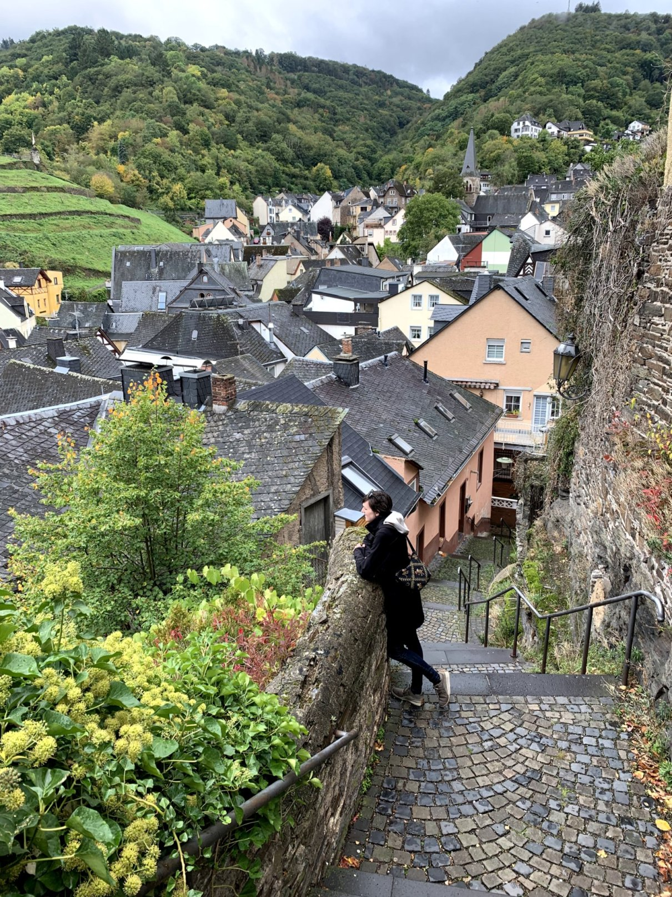
The next morning was time for me to go home. It was the longest day ever made even longer by the incompentecy of O'hare airport. I won't go into it here because this page is suppose to be about Germany. Dana was suppose to continue on this trip with Heather, as a sister trip, but since Heather broke her arm, Dana will be travelling by herself in Germany the rest of the way.
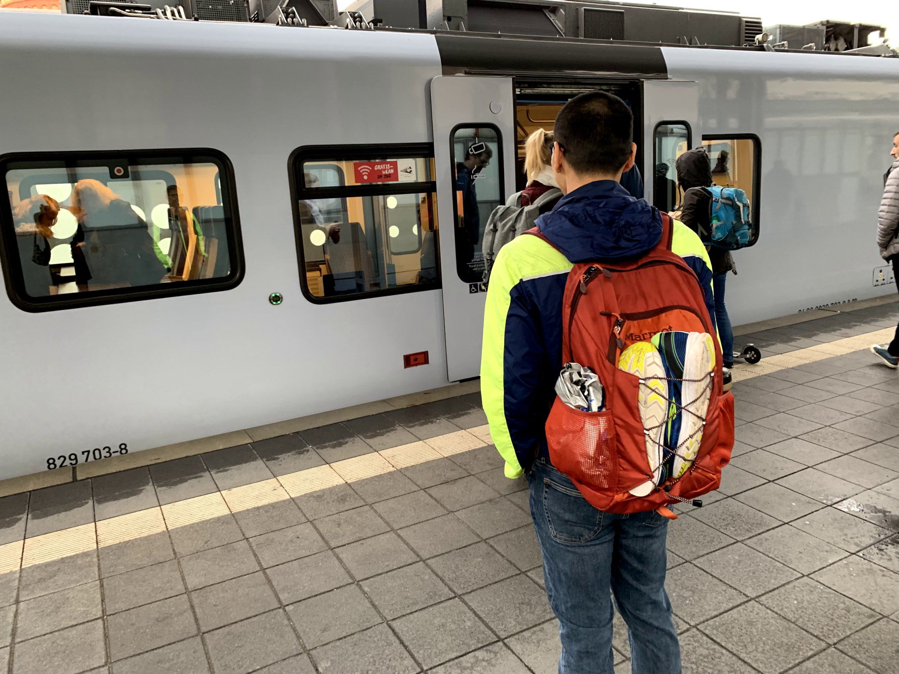
Heading home on a Scandiavian Airlines A330. Update: Heather had her surgery in Detriot the following Monday. A few plates and screws later, she is doing fine!
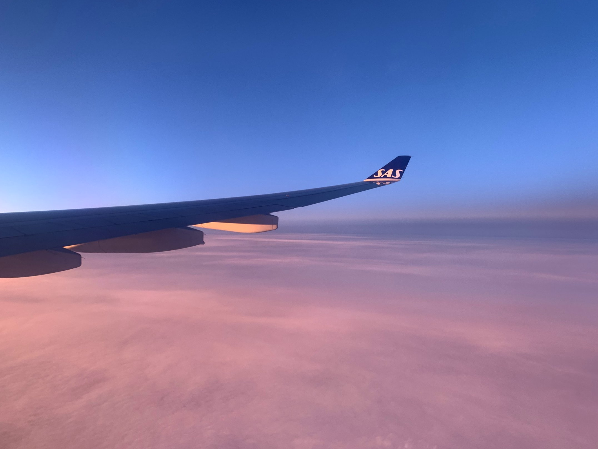